ゼミ旅行に行きました
ゼミ旅行は、普段は別のグループに属している人とも一緒に行動が出来る、年に一回の貴重な機会です。
今年のゼミ旅行は、島根県へと行って参りました。
宍道湖の周りをぐるっと周る形で進んでいきました。
１日目のお昼は出雲にて蕎麦打ち体験を行い、作りたての蕎麦を美味しくいただきました。
松江では、花と鳥の楽園フォーゲルパークに訪れました。
日常生活では見られない珍しい花を鑑賞したり、ホンモノのフクロウを腕に止めて記念撮影をしたりと、貴重な体験をたくさんすることが出来ました。
その日の晩は、玉造温泉街に位置する宿屋にて、４年生の市川くんと松田くんが、初めての論文紹介を行いました。皆で暑い議論を繰り広げたのち、熱い温泉につかり、日頃の疲れを癒しました。
２日目は、１日目に通って来た道を少し逆回りして、松江城近辺に訪れました。
ここは小泉八雲生誕の地でもあるため、城下町では彼の生涯にかかわるものの博物館等があり、歴史と文学を同時に学べるお得な時間を楽しみました。
昼下がりには宍道湖を少し離れて、出雲大社にまで足を伸ばし、参拝や買い物をしました。
最後に、出雲大社のそばに位置するワイナリーにて、島根牛とワインをいただきました。
もちろん、運転をしてくれた人たちはワインはお預けでしたが、その代わりぶどうジュースをいただきました。
僕は酔っててよく覚えてません。
今年も楽しいゼミ旅行となりました。
この旅行を通して、研究室のメンバーの仲がさらに深まったと思います。
今年のゼミ旅行は、島根県へと行って参りました。
宍道湖の周りをぐるっと周る形で進んでいきました。
１日目のお昼は出雲にて蕎麦打ち体験を行い、作りたての蕎麦を美味しくいただきました。
松江では、花と鳥の楽園フォーゲルパークに訪れました。
日常生活では見られない珍しい花を鑑賞したり、ホンモノのフクロウを腕に止めて記念撮影をしたりと、貴重な体験をたくさんすることが出来ました。
その日の晩は、玉造温泉街に位置する宿屋にて、４年生の市川くんと松田くんが、初めての論文紹介を行いました。皆で暑い議論を繰り広げたのち、熱い温泉につかり、日頃の疲れを癒しました。
２日目は、１日目に通って来た道を少し逆回りして、松江城近辺に訪れました。
ここは小泉八雲生誕の地でもあるため、城下町では彼の生涯にかかわるものの博物館等があり、歴史と文学を同時に学べるお得な時間を楽しみました。
昼下がりには宍道湖を少し離れて、出雲大社にまで足を伸ばし、参拝や買い物をしました。
最後に、出雲大社のそばに位置するワイナリーにて、島根牛とワインをいただきました。
もちろん、運転をしてくれた人たちはワインはお預けでしたが、その代わりぶどうジュースをいただきました。
僕は酔っててよく覚えてません。
今年も楽しいゼミ旅行となりました。
この旅行を通して、研究室のメンバーの仲がさらに深まったと思います。
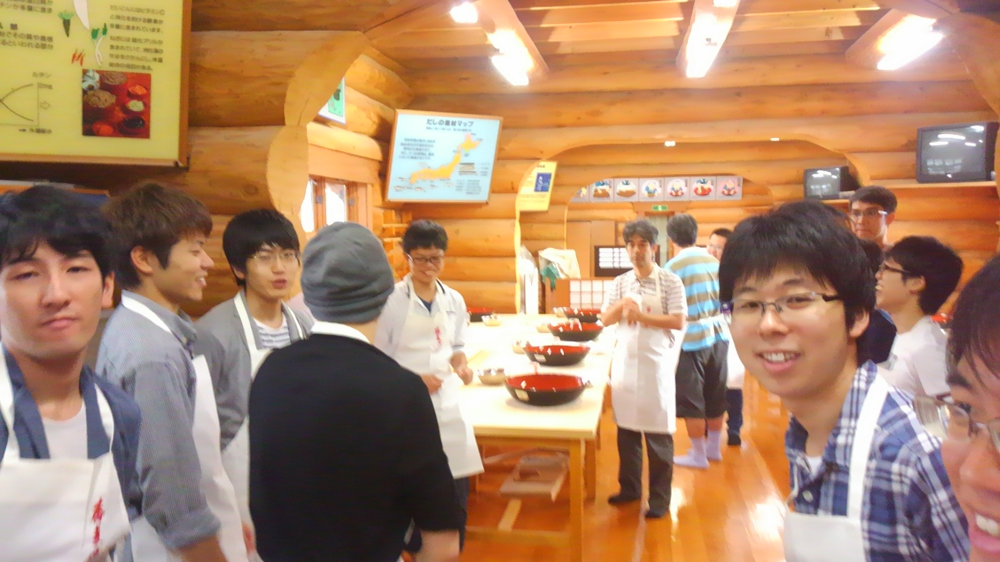
蕎麦打ち体験開始直前の様子
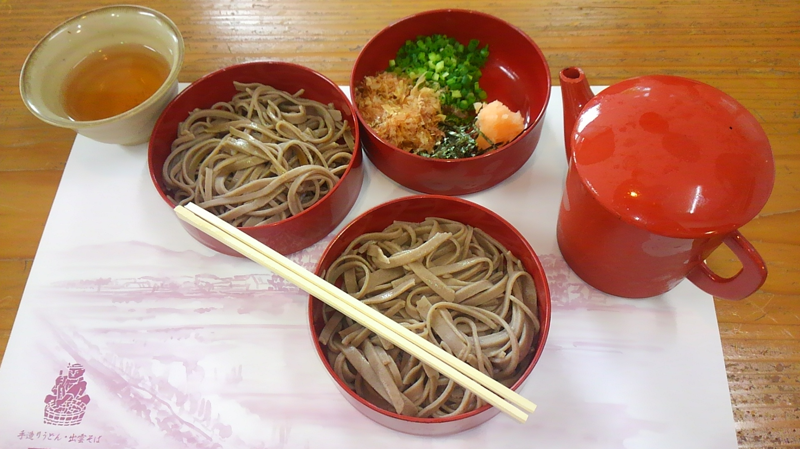その蕎麦

フォーゲルパークの花々
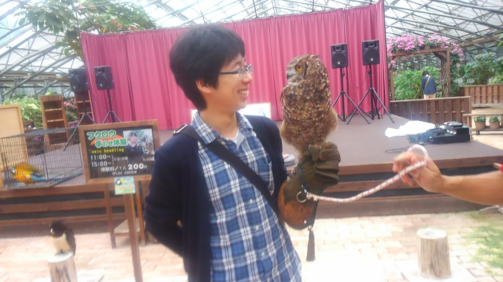フォーゲルパークにて記念撮影するM1の後藤くん（右）とフクロウ（左）
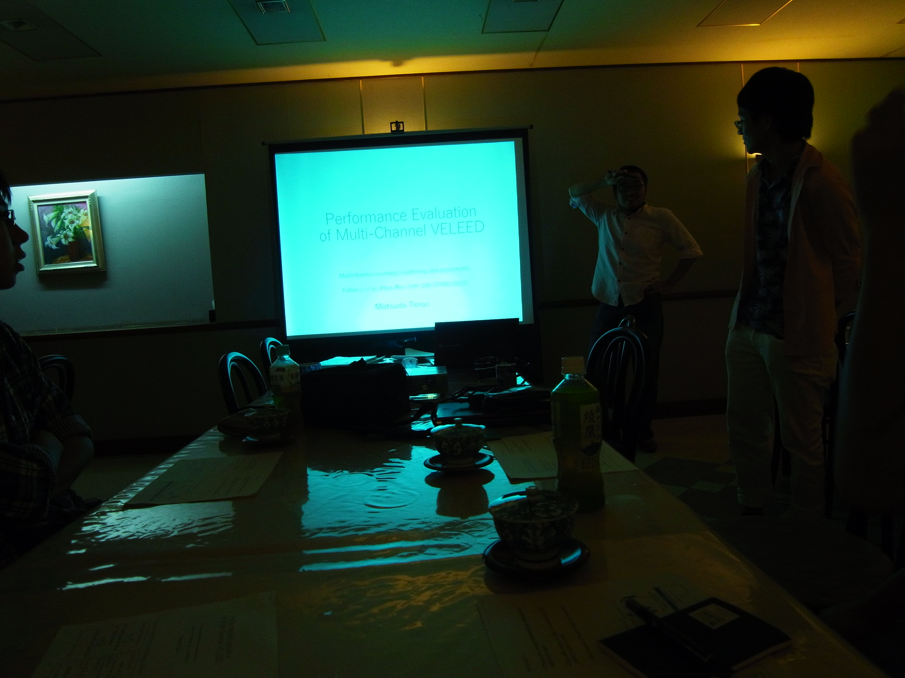論文紹介を行うB4の松田くん
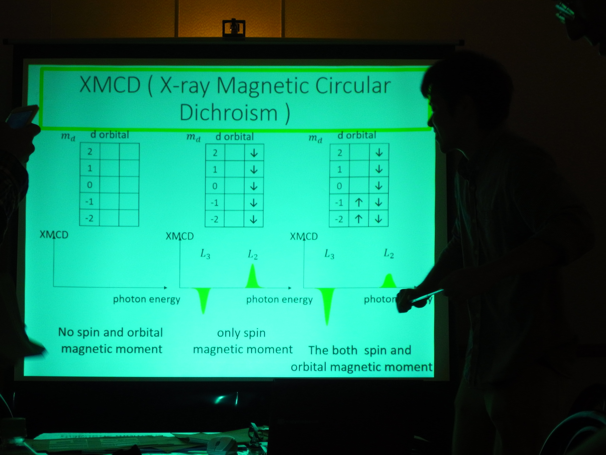論文紹介を行うB4の市川くん
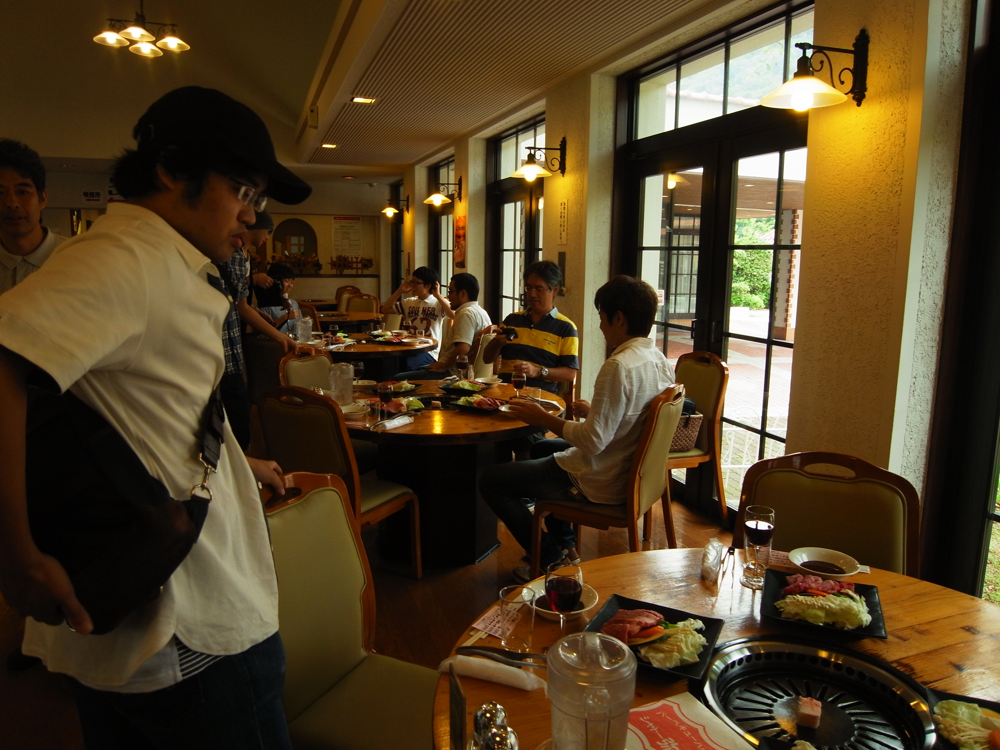ワイナリーにて島根牛とワイン
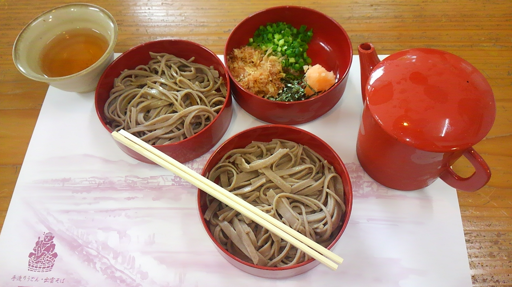
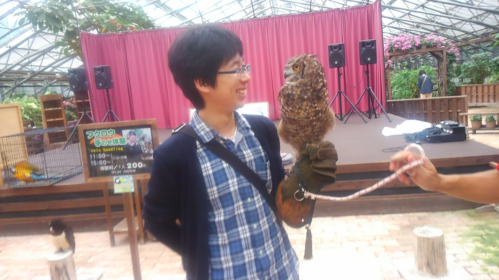
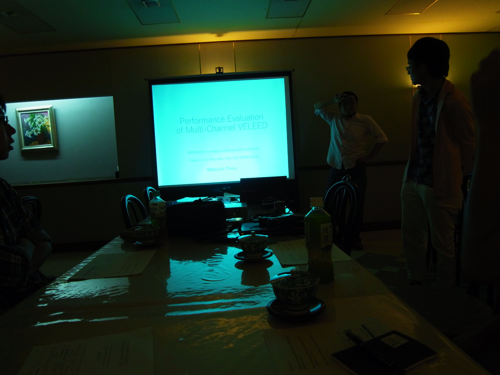
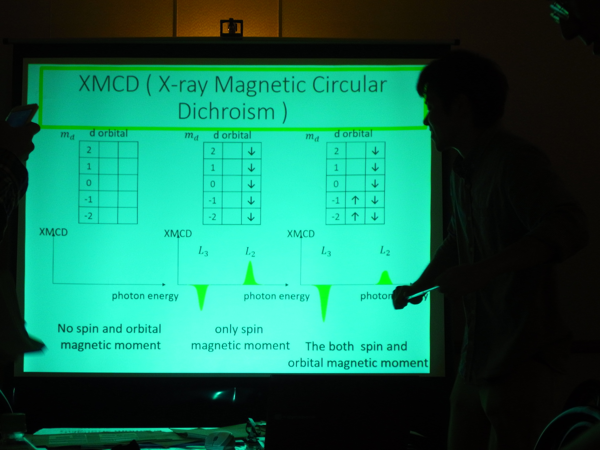
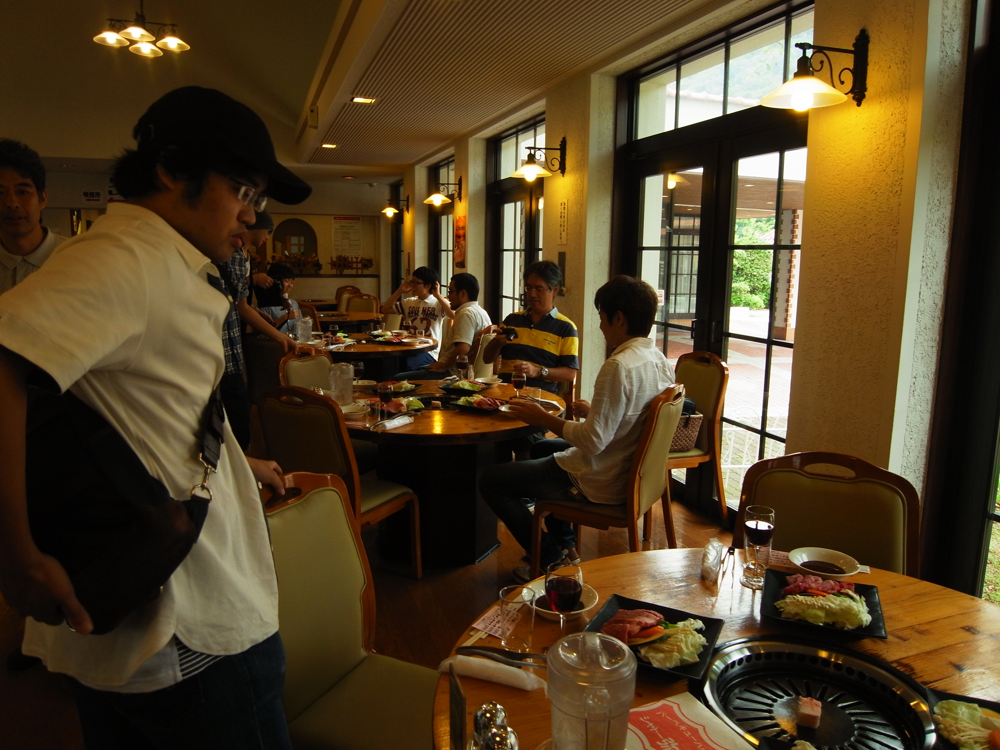
文責：宮下剛夫